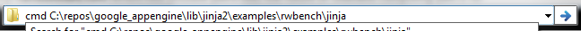

If you're working a lot with the command prompt and Windows Explorer you find yourself either having to copy/paste a lot of paths into cmd.exe or just wasting time writing them by hand. Windows 8 addresses that with a (more visible) open command prompt here button, but the functionality already exists in Windows 7 and maybe even earlier.
The first way in achieving that is shift+right clicking on a folder and clicking on the option "Open command window here".

The second way is something that's even more hidden. Say for example you have a long path such as

All you'd have to do is edit it and type cmd at the beginning of the string followed by a space to separate the command from the path, then hit Enter.

And voilà!

Comments !